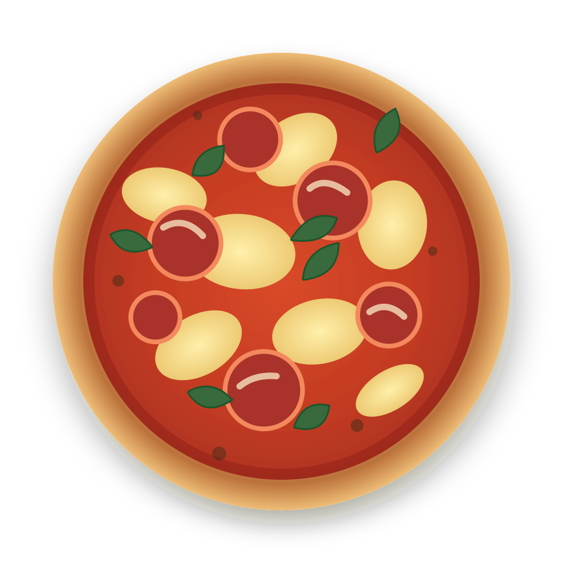
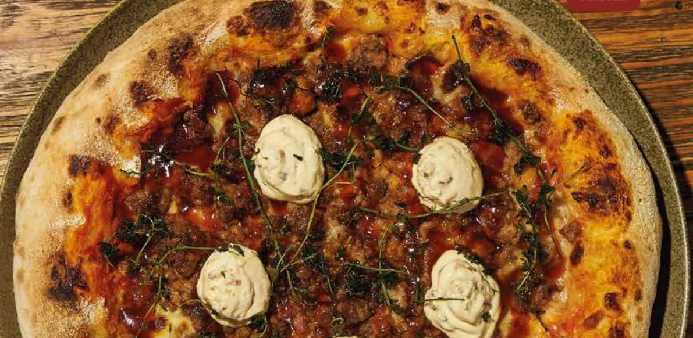

LA VIDA
ES MEJOR
CON LA
PROPIA.
Una buena pizza merece un buen plan. Sabores con carácter, combinaciones inesperadas y ganas de quedarse otro ratico.

la propia!

Una pizza.
Muchas ganas
de volver.
En Bello, un espacio para encontrarse alrededor de pizzas artesanales, pastas y conversaciones que duran un poco más. Aquí la carta mezcla clásicos con combinaciones con personalidad.
02 / SE NOS ANTOJA
Las que dan
de qué hablar.
Sabores de la casa que se ganan un lugar en el plan. Elige tu favorita y arma tu pedido.

Fotografía extraída de la carta pública del restaurante · Demo no oficialUna excusa
para vernos✳
Pide tu favorita para llevar, arma un domicilio o ven a compartir una pizza en nuestra sede de Cabañas, Bello.
Armar el plan05 / HAZ EL PLAN
Te guardamos
un puesto.
Cuéntanos cuándo quieres venir. Preparamos tu solicitud para WhatsApp; la mesa queda reservada cuando el restaurante la confirme.
BUENA COMPAÑÍA.
TE ESPERA
EN BELLO ↗
06 / NOS VEMOS ALLÁ
Cerquita de ti.
En Cabañas.
Calle 27B #57-07, Quintas de La Cabañita, Bello, Antioquia
Lunes a jueves: 5:00 p. m. – 10:30 p. m.
Viernes y sábado: 12:00 m. – 11:30 p. m.
Domingo: 12:00 m. – 10:30 p. m.